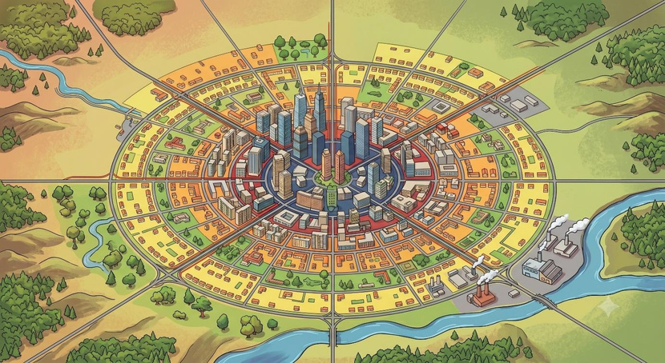

Commuting is a concept for some of us that is scary and stressful. As someone who commutes almost daily between Batıkent and Kolej using public transport, I am quite sure that I am also among these people. On some days, I avoid the metro due to the congestion, preferring to find less crowded alternative routes. I sometimes even feel dread when remembering that I must use public transport to return home. Because "commuting" has become such a stressful part of my life, I wanted to explore the literature on this topic. In this article, you will read what the research reveals.
The Commuting Paradox: Theory versus reality
The Standard Urban Model (Alonso, 1964; Muth, 1969; Mills, 1972) explains many daily economic realities: rent prices, house locations, and work choices. The model shows that city centers have high rents but short commutes, while distant areas offer cheaper houses and more space but require longer travel times to work. People can trade off these factors—accepting a longer commute in exchange for a larger house, a garden, or lower rent. Theory predicts that in equilibrium, no one can move to improve their overall utility. Yet some economists argue that a "commuting paradox" exists in real life: people cannot actually compensate for long commutes with cheaper housing or larger spaces. In other words, the theory is elegant on paper, but does it match reality?
Stutzer and Frey (2008) investigated whether theory aligned with data. Using the German Socioeconomic Panel survey between 1985 and 2003, they compared utility levels across different commuting times. To measure utility, they used subjective well-being—how satisfied people report themselves to be. They assumed that, according to the Standard Urban Model, well-being should remain stable as commuting time changes, since workers can compensate through housing choices. However, if well-being differs significantly by commuting time, compensation is failing in real life.
People's subjective well-being decreases as commuting time increases. — Stutzer and Frey (2008)
The results were striking: people's subjective well-being does decline as commuting time increases. The theory does not align with the data. The authors named this mismatch the "commuting paradox." Moreover, they calculated that people would need a 35.4% wage increase on average to fully compensate for the well-being loss caused by long commutes. This finding challenges the core prediction of the Standard Urban Model and raises questions about how we understand the trade-offs workers actually face.
Does commuting type matter?
Commuting time is not the only factor affecting well-being. The type of commute also plays a significant role. Olsson et al. (2013) conducted a study in Sweden examining happiness and commuting. They divided commuting types into three categories: private cars, public transport, and biking or walking. The results showed that people who walk or bike to work report higher satisfaction levels than those who commute by car or public transportation. Moreover, as commuting time increases, satisfaction drops further. Well-being, then, is shaped not just by how long the commute lasts, but by how people travel.

Another study from the Netherlands (Lancée et al., 2017) focused on how different commuting types affect mood. The findings showed that people using public transport for commuting have the lowest happiness levels. In contrast, walking and biking rank highest for mood. Interestingly, commuting with others—traveling alongside someone else—also boosts mood positively, even if the duration and mode remain unchanged.
These papers reflect my own experiences perfectly. Yet I also wondered whether Turkish research confirms these patterns. Serin Atis et al. (2022) investigated the relationship between commuting, mood, and job performance in Turkey. They found that people using public transportation reported significantly worse moods than those driving private cars. A related finding: people with lower moods also perform worse at their jobs. Interestingly, they found no significant link between commuting duration alone and job performance—suggesting that mood quality, not just commute length, matters for work.
Implications for daily life
I think these papers explain perfectly the situation that most people feel every day. Even though reading these papers will not provide a better experience for me, I believe that we can still make our journey enjoyable by socializing or focusing on ourselves.
Selected references
- Alonso, W. (1964). Location and land use: Toward a general theory of land rent. Harvard University Press.
- Lancée, S., Veenhoven, R., & Burger, M. (2017). What way of travel feels best for what kind of people? Mood during commute in the Netherlands. Transportation Research Part A, 104, 195–208. https://doi.org/10.1016/j.tra.2017.04.025
- Olsson, L. E., Gärling, T., Ettema, D., Friman, M., & Fujii, S. (2013). Happiness and satisfaction with work commute. Social Indicators Research, 111, 255–263. https://doi.org/10.1007/s11205-012-0003-2
- Serin Atis, G., Ozic, A. B., Bukruk, T., Ozkaya, E., & Kantas Yorulmazlar, O. (2022). The association between commuting, mood and job performance: the structural equation modelling approach. International Journal of Occupational Safety and Ergonomics, 28(4), 2599–2605. https://doi.org/10.1080/10803548.2021.2010970
- Stutzer, A., & Frey, B. S. (2008). Stress that doesn't pay: The commuting paradox. Scandinavian Journal of Economics, 110(2), 339–366. https://doi.org/10.1111/j.1467-9442.2008.00542.x